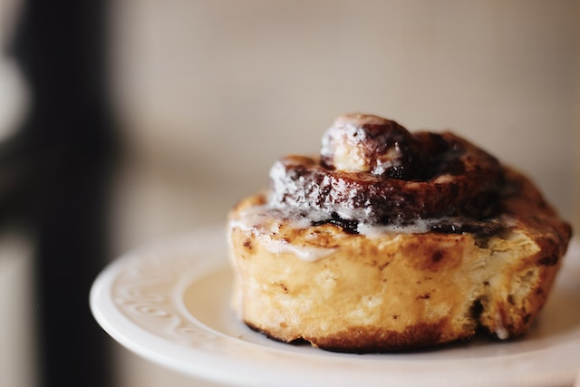

Inicio
Rollos de Canela

Estos rollos recíen salidos del horno son una delicia para acompañar la merienda!
La textura de la masa debe de ser esponjosa y suave para que pueda deshacerse en la boca.
Es ideal para las personas golosas, la combinación de la canela y azúcar le da un sabor unico a la masa.
Ingredientes
Para la masa
- Harina 0000 1kg
- Agua 600ml
- Levadura 25grs
- 1 huevo
- Escencia de vainilla c/n
Para el empaste
- Manteca 100grs
- Canela 2 cds
- Azucar fantasia 200grs
Para el glaseado
- Azucar glass 100grs
- Jugo de naranja 2cds
Preparación
- En un bowl colocar la harina y en el medio añadir la levadura, el agua, el huevo y la escencia de vainilla, meclar bien todo hasta tener una masa.
- Dejar reposar la masa por 1 hora.
- Colocar la masa en una superficie plana y darle a una forma fina y rectangular, como de 5 a 10mm.
- Untar la manteca que tiene que estar a punto pomada por toda la superficie, luego espolvorear
la azucar y la canela que tienen que estar previamente mezcladas.
- Tomar uno de los lados mas largos del rectangulo y empezar a enrollar hasta tener una maza en espiral.
- Cortar la masa en mitades hasta que nos queden rollos pequeños de tamaños iguales.
- Colocar los rollos en una fuente enmantecada y cocinar a fuego medio por 40 minutos aproximadamente.
- Una vez que se enfrien, mezclamos la azucar glass y el jugo de naranja y untamos los rollos con el glaseado.
Inicio